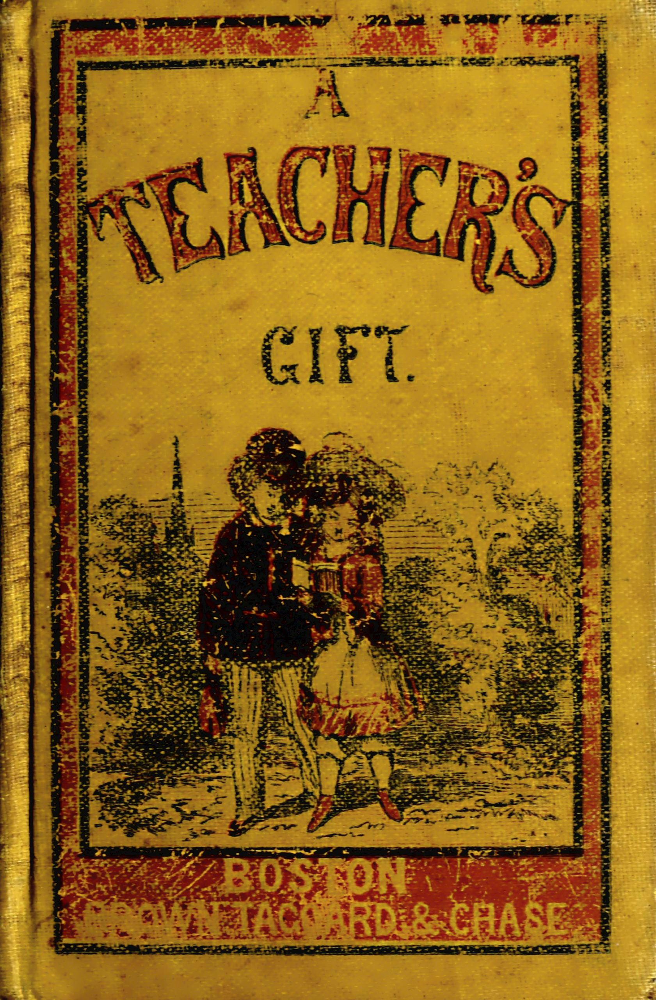
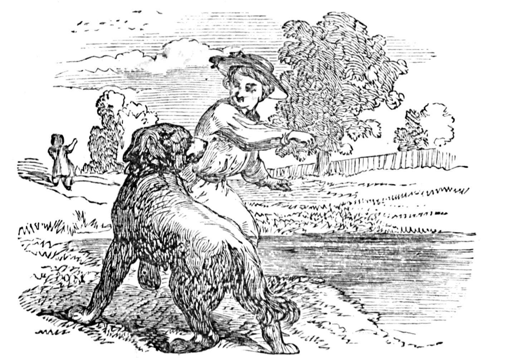
A BAD SIGN. (See page 27.)
A
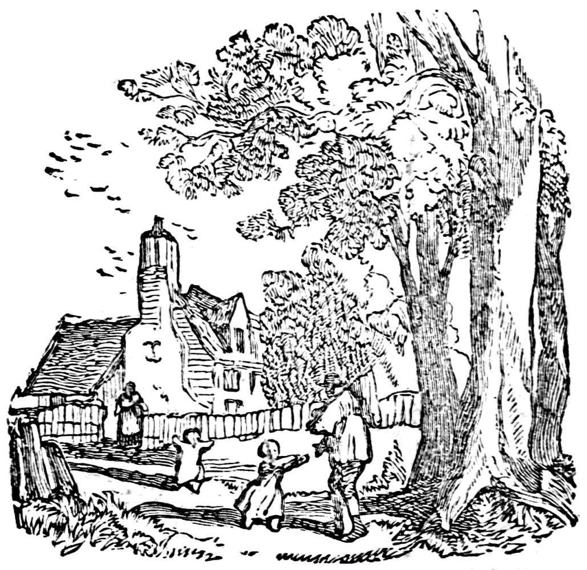
BOSTON:
BROWN, TAGGARD & CHASE,
(Successors to W. J. Reynolds & Co.)
25 & 29 CORNHILL.
1857.
Entered according to Act of Congress, in the year 1857, by
Brown, Taggard & Chase,
In the Clerk’s Office of the District Court of the District of
Massachusetts.
PRINTED BY
GEORGE C. RAND & AVERY.
ELECTROTYPED AT THE
BOSTON STEREOTYPE FOUNDRY.
[Pg 5]
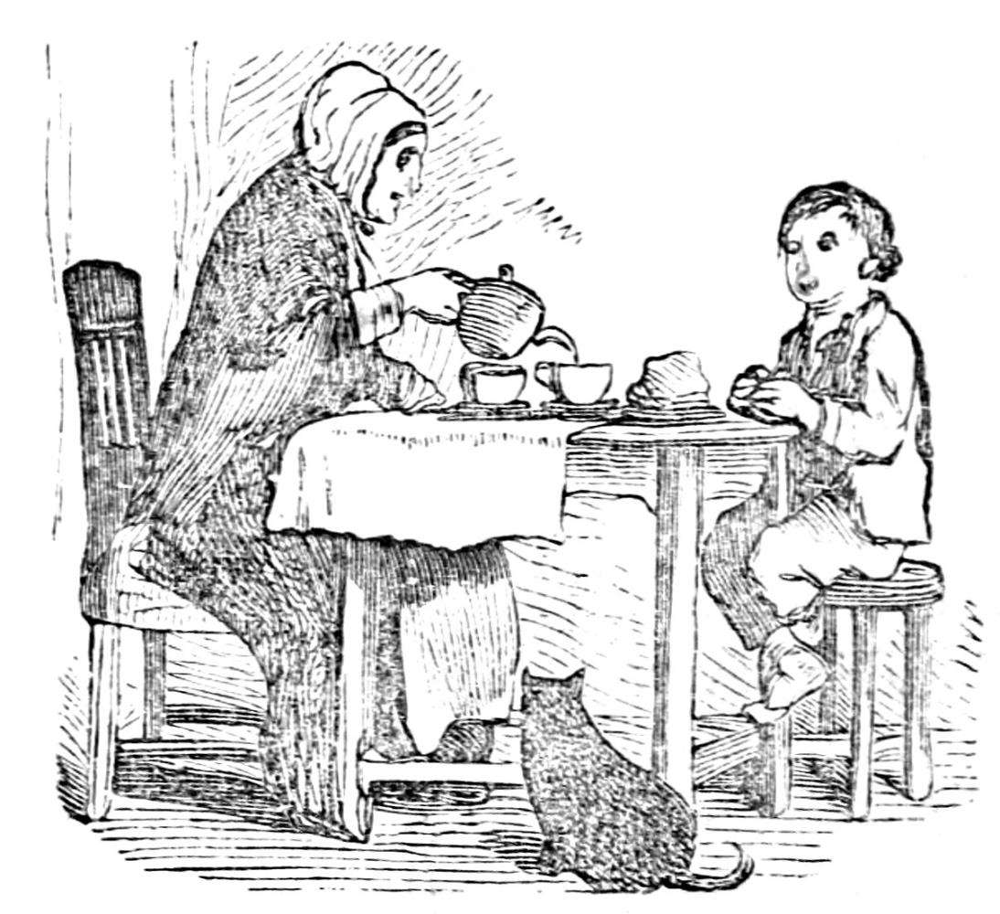
“Well, John, have you succeeded, to-day, my son?”
“No, mother; I have been nearly all over the town, and no one would take me. But I think if you had been with me, I should have stood a better chance. You[Pg 6] look so thin and pale, mother, somebody would have felt sorry, and so have taken me; but nobody knew me, and no one saw you.”
It was a cold, bleak night, and John had been out all day, “looking for a place.” He had tried hard, until it was quite dark, and then gave up, thinking his mother must be tired of waiting for him.
John’s mother was a widow, and a very poor one. She had kept herself by needle-work, till a severe trial of sickness had confined her to her bed, and she was unable to do more. She told her little son to sit down by the fire, while she got him some food. The fire and the supper were very scanty; but John knew they were the best she could provide, and he felt that he would rather share such a fire and such a supper with so kind a mother, than sit at the best-filled table with any body else who did not love him as she did, and whom he did not love as he did her.
[Pg 7]
After a few moments of silence, the boy looked up into his mother’s face, and said, “Mother, do you think it would be wrong to ask my new Sabbath school teacher about a place?” “No, my child, not if you have no other time, and I think that he would be a very proper person; at least, I should think that he would be interested in getting you a good place.” “Well, to-morrow is Sabbath day, and when the class breaks up, I will ask him.”
After reading a portion of God’s holy word, the mother and her little boy kneeled down together to pray. She asked God to bless them with his Holy Spirit, that they might truly repent of sin, and through faith in Jesus Christ, obtain pardon. She prayed that God would care for them as a father, give them his rich grace, and do that which he knew to be best for them, for Christ’s sake.
“I feel happier now,” said John; “I was so tired when I came in that I felt quite[Pg 8] sad;—did I look so, mother?” The mother’s heart was full, and she gave her boy a kiss, which was sweeter to him than many words.
Next morning was the Lord’s day. John’s breakfast was more scanty than ever; but he said not a word about that, for he saw that his mother ate very little of it. But one or two sticks of wood were left outside the door where it was kept, and he knew that both food and fire might all be gone before night. They had earned no money to buy any thing for several days. The sun was shining bright and clear, but the air was very cold. The child had no overcoat; but hastening to the school, he was in his seat just as the superintendent and his teacher entered.
“Who is that little pale-faced boy in your class?” asked the superintendent of the teacher. “His name is Jones. I intend to visit him this very week. He is a well-behaved boy.” “I should like to know[Pg 9] more about him,” said the superintendent, “and I will speak to him after school.”
The superintendent did not forget him, and when the class broke up, seeing him linger behind the other scholars, went up and spoke to him kindly. “You have been here to school several Sundays, have you not, my boy?” “Yes, sir; I came just a month ago to-day.” “Had you ever been to school before that time?” “Yes, sir; before mother was taken sick, I used to go to another school; but that was a great way off, and when mother got well, and you opened this new school, she brought me here.”
“Well, did I not see you yesterday, looking for a place in Water Street?” “I was down there, sir, looking for a place.” “Why did you not take that place which the gentleman had for you in the large shop?” “Because, sir, they kept open shop on the Sabbath, and mother would not wish me to work on the Lord’s day.”
[Pg 10]
“You did not keep the piece of gold money that you found on the floor, as you were coming into the street; why didn’t you?” “Because it was not mine, sir; and I thought that the gentleman of the shop would find the owner sooner than I should.”
“He did, my boy,—it was my money. Did you not get a place yesterday?” “No, sir; all the places were full, and nobody knew me.” “Well, my boy, you may go now, and tell your mother that you have a place. Come to me very early in the morning—your teacher will tell you where I live.”
John went home with his heart and his eyes so full, that he could hardly see the street, or any thing as he went along. He knew that it would cheer his dear mother very much, and so it did. That Sunday evening John and his mother knelt down together, and with tears of joy, they gave thanks to God, who had not forgotten the fatherless and the widow in their distress.
[Pg 11]
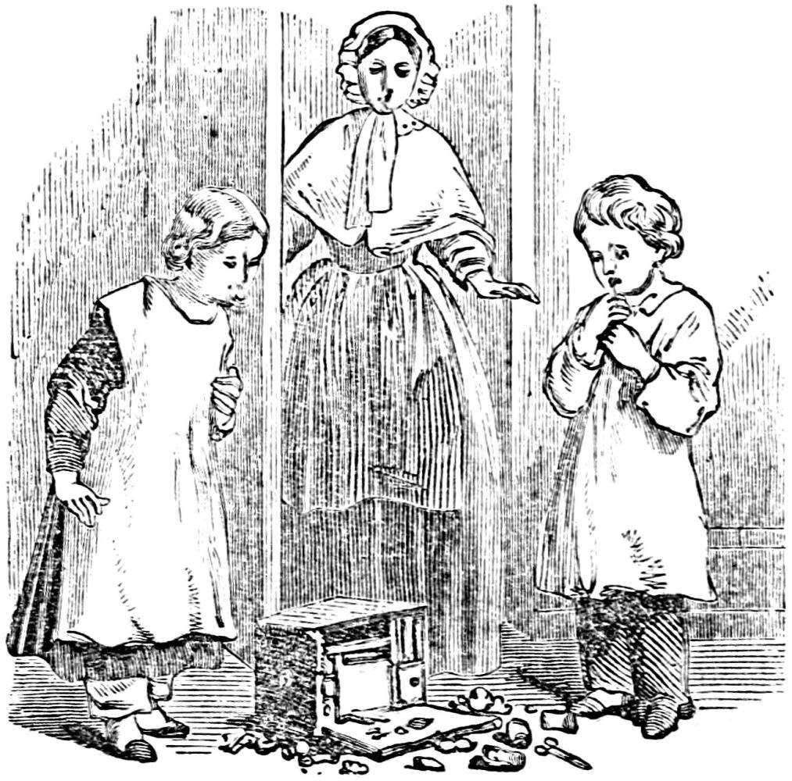
Willie Mortimer was a kind and affectionate little boy, but he possessed a hasty temper, which was ever leading him into some harm. Here, you see, it has just led him into trouble. In trying to get his mother’s work box away from his sister,[Pg 12] he has dropped it, and all the things have rolled about the floor.
His mother often urged him to strive to govern it; and the big tears would dampen his little cheeks, as he reflected upon the misdemeanors which his temper ever urged him to commit. He repented quickly of his errors, but somehow, he could not “think enough,” before his temper had conquered him. He often desired to overcome it, but felt discouraged sometimes.
One day, after much enjoyment, he came to his aunt, with whom he was staying, and said,—
“O, I’ve been so happy, and got along so well to-day, without getting angry!”
“How so?” exclaimed his aunt, as she smoothed his brown locks.
“I prayed this morning, before I came out of my room, and said, ‘Lead us not into temptation;’ and I think God hears my prayer, and helps me to be good,” said Willie.
[Pg 13]
A subdued light shone from Willie’s dark eyes, as he so confidingly reposed in grace and help from Heaven to overcome his waywardness.
The sun bade the children all, yea, and the fair earth, his accustomed “good night,” while Willie still remained a conqueror over his temper. As he clasped his hands in his evening prayer, he thanked God for not leading him into temptation, and with abiding faith in the great Being of love, he laid him down to sleep.
My dear young friends, we all are surrounded with temptation, and like little Willie, are possessed of human weaknesses; and how much we need to pray, with earnest faith,—
“Lead us not into temptation.”
[Pg 14]
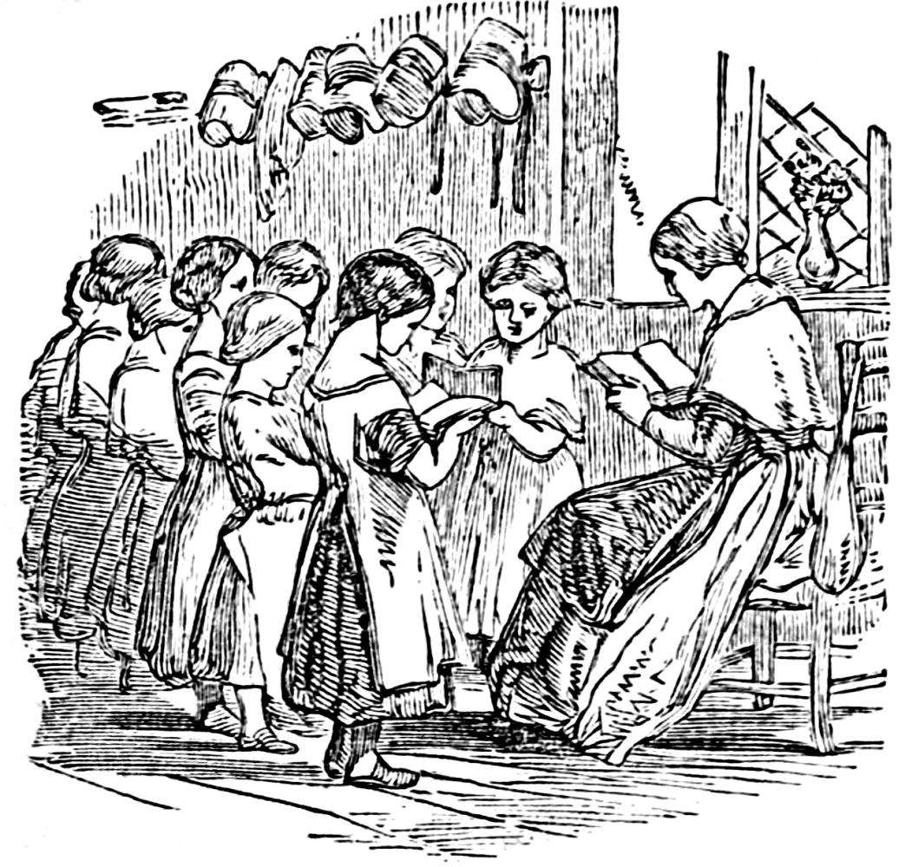
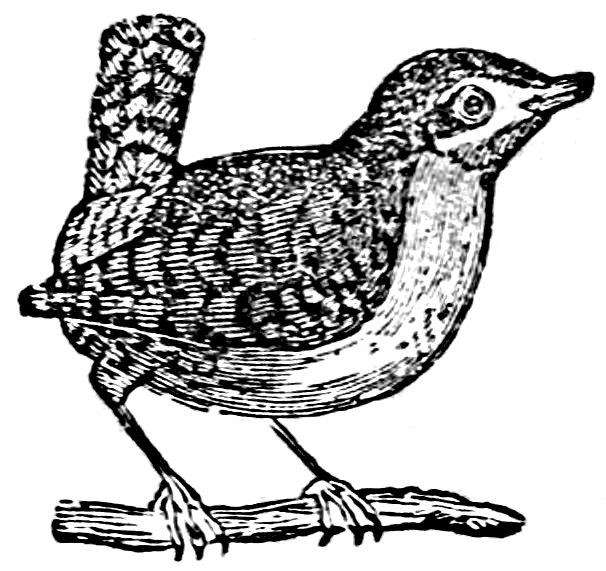
[Pg 16]
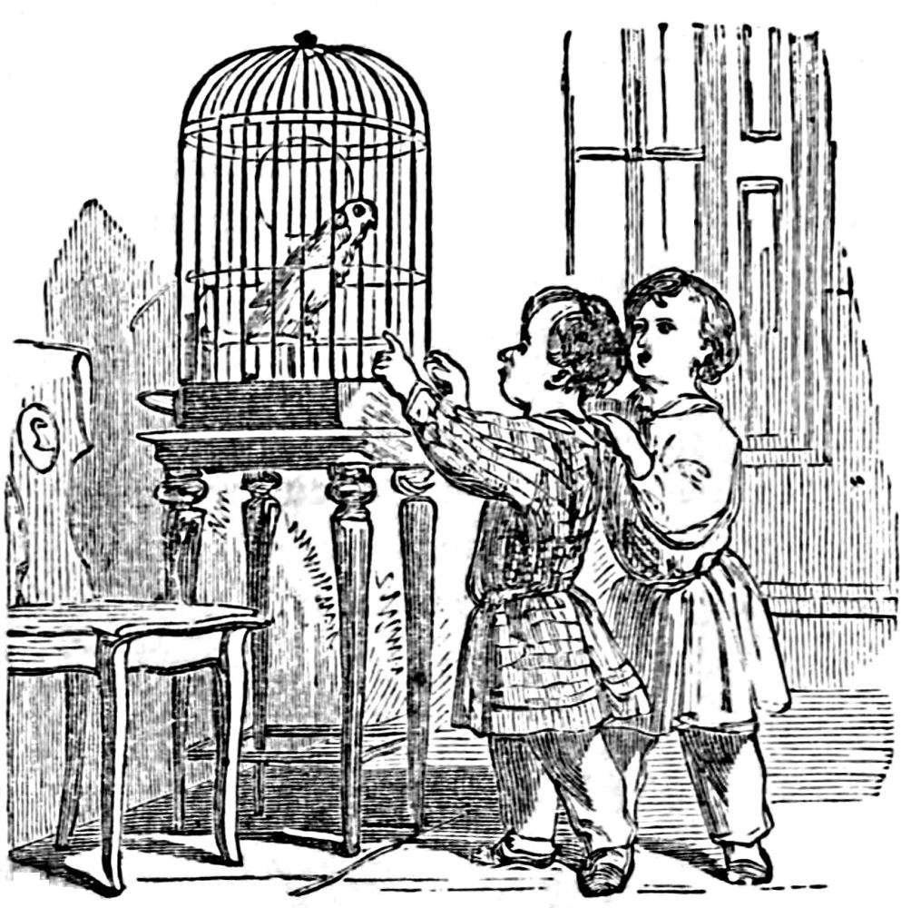
The birds, the dear, beautiful birds, that come in the sweet spring time to build their nests among the fresh green leaves and fragrant blossoms of our home trees! How glad we are to see them! The little children love the birds. No kind and gentle[Pg 17] boy will rob their pretty eggs or their tender young. But you may be happy in watching their graceful forms and varied colors, as they glide through the air or hop about on the ground. Our heavenly Father made them, and they praise him in their many toned songs. He feeds them, and teaches us thus to trust in his care. The God that provides for the birds will not forget you, for the Saviour says, “Ye are of more value than many sparrows.”
I always like to see children making acquaintance with the birds. If they watch their habits, they will learn some important lessons. I have been interested in some observations which a little friend of mine has recently made, and which she has told in her first school composition. It is as follows:—
“My dear Schoolmates,—I would like to tell you a story. A little chipping bird built a nest on a peach tree, near our kitchen window. It was a soft, pretty[Pg 18] nest, lined with hair. A naughty little wren, wishing to build herself a nest, instead of looking about to find straws and hair, comes every day and takes them from the chipping bird’s nest. I think I shall not love her as much as I did before. I think I shall call her a little thief, instead of a little wren. I think little children should learn a lesson from the birds, and not take what does not belong to them, for they will be called thieves, and no one will love them if they do.”
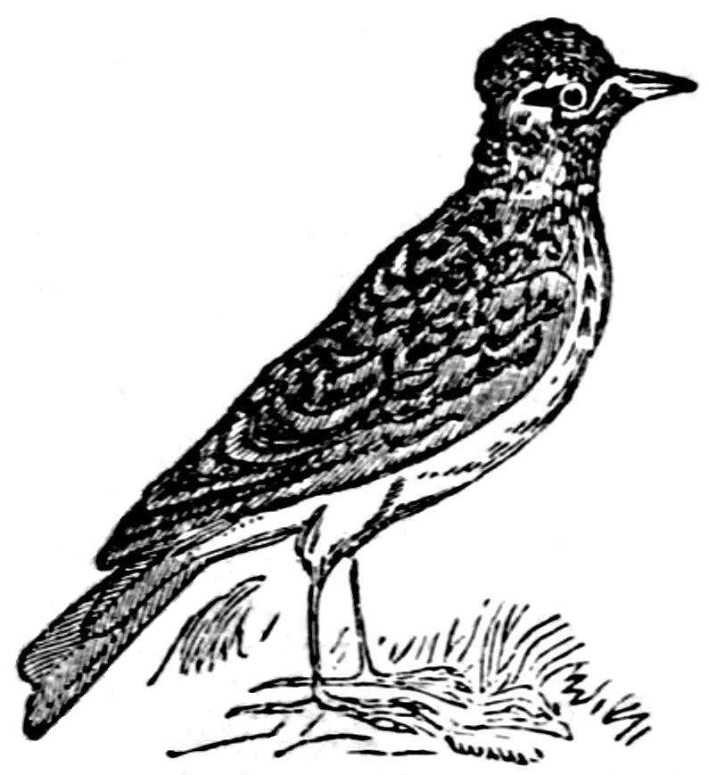
[Pg 19]
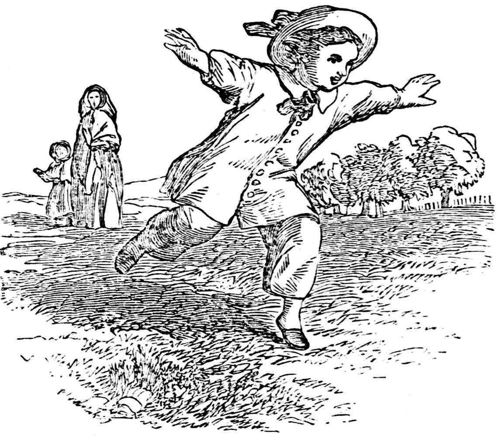
What a beautiful creature is the gaudy butterfly! Children, you do not wish to crush its golden wings, and destroy its brief, sunny life. O, no; you had rather see it free and happy. How cruel and wicked it is for children to destroy these beautiful creatures which God has made!
[Pg 20]
Here is a story in regard to a little boy and a butterfly.
“I was walking along through a pretty village, one summer day. The cottages were covered with woodbines and roses. The bees were busy carrying home honey to the hives, while the children were playing about so happily. I was thinking how soon the bright summer would be gone, and the leaves fallen from the trees, when a little boy ran by, chasing a beautiful butterfly. I was sorry to see him soon catch it, and hold it fast in his hand. I asked him if he knew how cruel and unkind it was. He said,—
“No, ma’am; I wanted it, to take home and put under a glass; it looks so very pretty. I did not know it would hurt it.”
But when I told him how much pain it gave the poor creature, he opened his little hand to let the butterfly escape.
Alas! poor thing, it was so hurt it could not fly at all; so we were obliged to kill it,[Pg 21] to put it out of pain. The little boy was very sorry; so were the other children who had gathered round.
Then I showed them the dust upon the wing, and told them if we could only see it distinctly, how it would look almost like feathers, and how it hurt the poor creature to have it brushed off. I explained to them about the caterpillar, and that some of them spin beautiful webs, and then come the butterflies, which fly about in the bright sunshine, but die when winter comes.
Then we talked about the great God, who made all these beautiful creatures, and how he loved dear children to be kind to one another, and to poor dumb animals that could not tell when they were in pain.
Children may run about the fields, and gather the beautiful flowers, and bright green ferns; which the little boys and girls said they would do, and never catch butterflies any more, but only watch them fly about, so happily basking in the sunshine.”
[Pg 22]
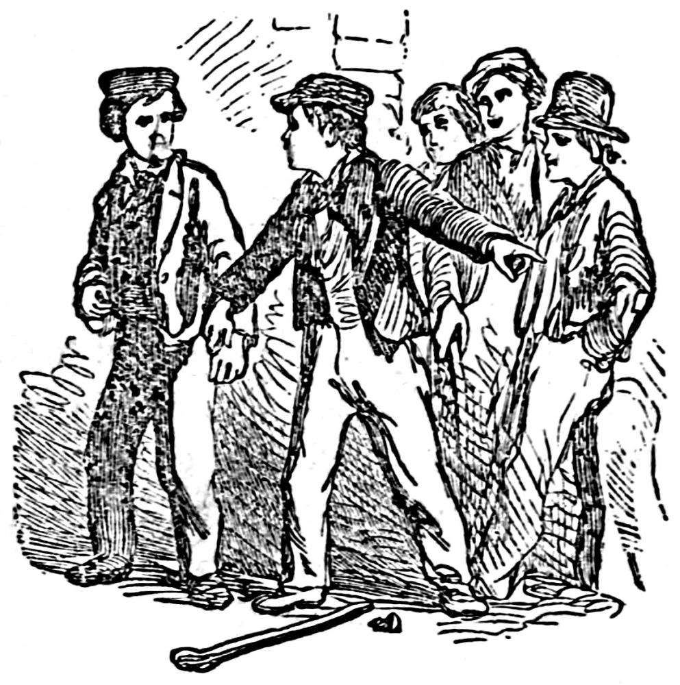
Will you look at two pictures, and see if either one belongs to you?
The first is of a little boy. I will not tell you his name, nor his age, nor where he lived, nor who are his parents. I am sure he would not like to be known; but I must tell you about him, that you may avoid[Pg 23] his faults, and take good warning by his conduct.
This little boy has a kind mother, and she wishes that he should grow up to be a useful and pious young man. Yet, sad to tell, he does not himself care to do right, or to obey his parents, or to please God. There can be no doubt that he has a very hard and wicked heart; for when he is naughty, and grieves his mother, he does not care for her tears. And when he is told of a fault, he is stubborn, and will not ask to be forgiven, nor show any desire to amend.
Our Lord Jesus Christ, who came into the world to die for sinners, was once a little child. He has left a pattern for children who wish to be like him. As a child he was “subject in all things.” He never grieved his mother’s heart by a sullen or evil temper, nor made her shed a tear by any unkind conduct. O, how much did Mary love the holy child Jesus! But the[Pg 24] little boy of whom we write does not wish to be like Jesus. He does not love to hear about him as a kind Saviour. I do not think he ever truly prays to God to change his hard heart, and to give him the grace of his Holy Spirit, that he may be a better child. He may say his prayers, but he does not really pray, for he does not mean what he says, but is looking about him all the time he is on his knees, or is thinking of something else.
What is to become of this little boy, if he does not seek for grace to turn him from his evil ways? He will certainly grow worse. He will walk in the path of the wicked all the days he lives on earth; and then, when he dies, how sad will his end be!
Now, let us look at another picture. It is that of a little boy who obeys his parents, because it is right, because they love him, and because God has said, “Honor thy father and thy mother;” one who is as[Pg 25] careful to obey them when out of sight as when under their eye. There are several lads seen standing at the corner of a street. One proposes to the rest that they should all go and see the people on their way to the flower show. “O, yes! capital! so we will!” they all cried. “But, see, here is William Hall coming; let us ask him to go with us.” Then they said, “Come with us, William, and see the gentlemen and ladies at the flower show.” “Yes,” said William, “if my mother will give me leave: I will run and ask her.” “O, O! the baby!” they shouted aloud; “so you must run and ask your mother!” “I did not ask my mother,” said one boy. “Nor I,” said two or three more. “Come along with us,” they still said, “if you do not want to be called a coward as long as you live. Do you not see we are all waiting?”
William stood with one foot forward, and a flush on his face. Tears came into his eyes, as he heard the word “coward.”[Pg 26] Now was the time to see if he was brave enough to be called a coward, rather than do wrong. “I will not go without I first ask my mother,” said he, firmly, “and I am no coward either. I promised that I would not go out of the street without she gave me leave; and I should be a coward if I were to tell a wicked lie.” The rest now ran away, mocking and shouting; and William went quietly to his home. In the evening William was seen, with a happy face, taking a pleasant walk along with his dear mother.
Will you look at these two pictures, and see if you can find your own likeness in either? Are you like the boy who does not honor his parents? Then you do not fear God nor obey his word, and he is angry with you every day. Or, are you like him who would rather have the scorn and bad name of the rude lads than disobey his mother?
[Pg 27]
This boy is trying to get that poor dog into the water.[1] He seems to delight in tormenting the poor creature.
Now, this is a bad sign. It is a bad sign for a boy to be seen throwing stones at every dog, or pig, or bird he sees in the street. It shows that such a boy has an unfeeling heart. He does not care how much suffering he may cause a poor, innocent bird, or animal. What if he breaks a wing or a leg—he only laughs at the agony which he has caused.
Boys, never cultivate such a cruel disposition. Never cause any thing, that has feelings, pain, if you can possibly help it. I am afraid if you begin with tormenting the poor, innocent brutes, you can, after a while, injure your playmates and associates. Some have already been seen to throw[Pg 28] stones at poor boys just for the fun of it, or rather, to gratify the evil disposition of their hearts. Ah! many men have been hung for murder, or sent to the state’s prison, just because they cultivated such bad dispositions when they were boys like you. They commenced becoming cruel to animals first, and then to other boys, and so, little by little, their hearts became hardened, till they could even kill a man. Think of this the next time you are tempted to pick up a stone to throw at any innocent thing that has life and feeling.
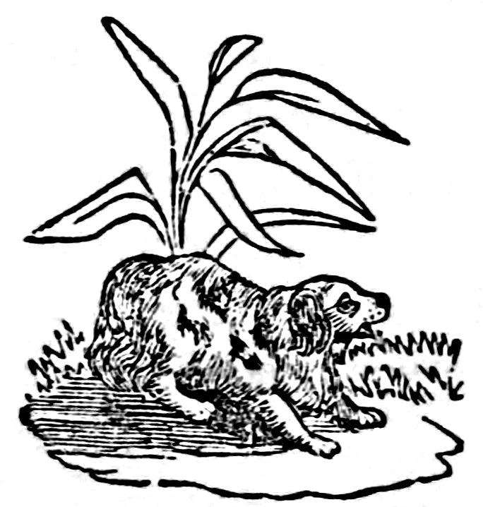
[Pg 29]
[1] See Frontispiece.
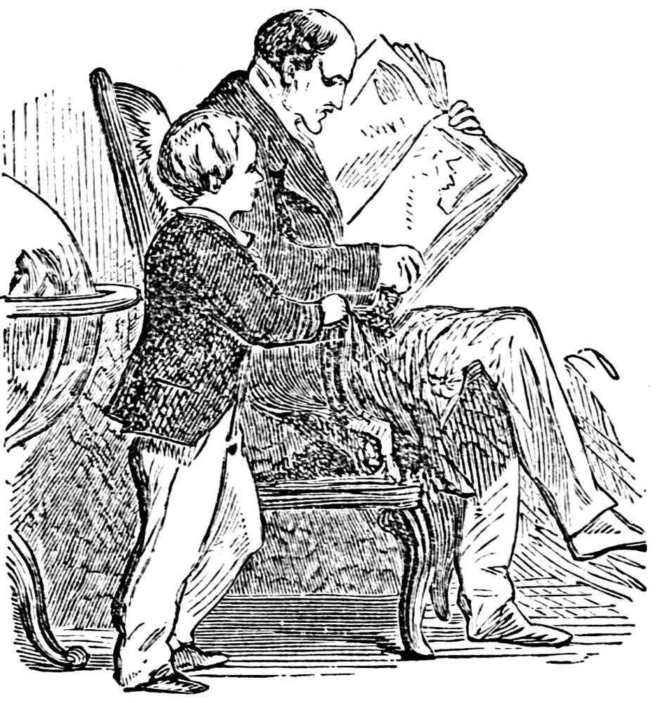
Charles Hart had once the folly to steal his father’s penknife; he had sold it for six cents to one of his schoolfellows; and he had employed the money in purchasing cherries, which he ate with much appetite.
But this little pleasure, which lasted but[Pg 30] a few minutes, was followed by sorrow and regret, that continued a long time.
In short, Charles’s theft was not long in being found out. His schoolfellow’s father, having seen the penknife in his son’s hand, and having learned of whom he had bought it, sent it back immediately to Charles’s father, with a polite message to know if he had given his son leave to sell it.
You may easily conjecture that young Charles was severely punished; but the punishment which he received from his father was trifling in comparison with what followed.
All those who lived in the same house with him suspected him the moment that they happened to miss any thing; and each accused him of having taken it. They rummaged his pockets, room, books, and carried their suspicions so far, as to inquire at the school where Charles went, if he had not shown any suspicious thing there.
Judge if this sort of distrust did not[Pg 31] cause him uneasiness. He often cried most bitterly at the injustice they did him; though he felt that he had but too well deserved it. Let him say what he would of their wronging him, or let him assert that he was incapable of doing what they accused him of, they did not continue to mistrust him the less; nor was it till after many years, and that he had given strong proofs of his amendment, that the people with whom he lived restored him their confidence.
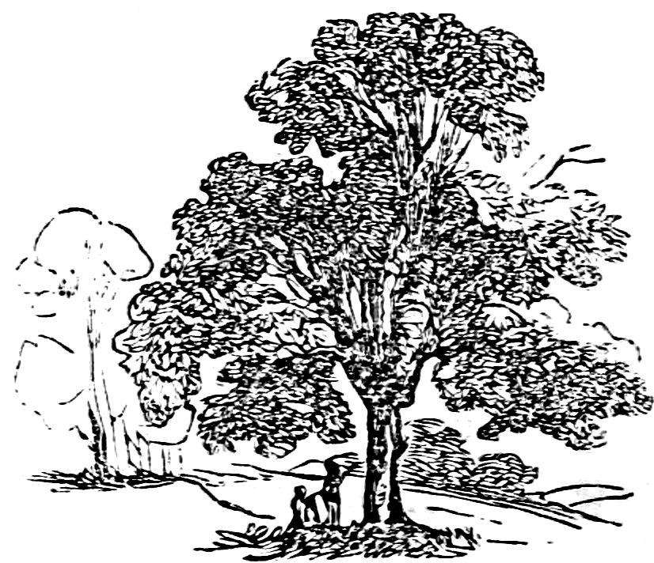
[Pg 32]
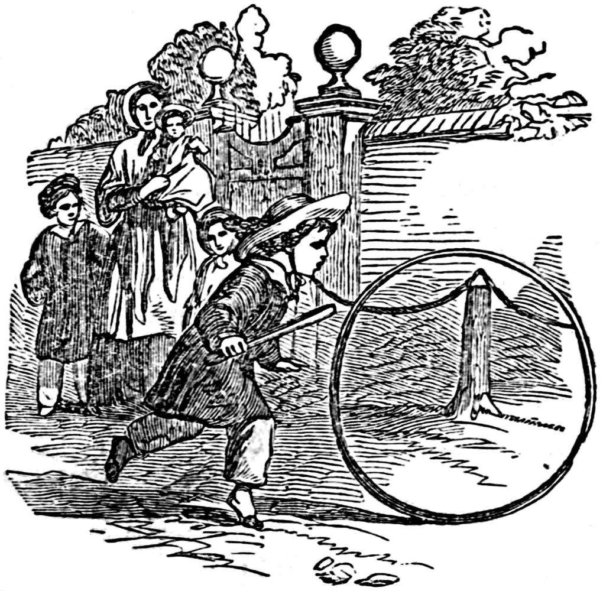
Did you ever think to be thankful to God for the free use of your feet? They press lightly o’er the crisp snow, or bound o’er the green grass as you drive along your hoop. But let me tell you of one who can never run and jump. When the busy hours of school are passed, and his little companions[Pg 33] shout and toss their hats in air, with the wild joy of boyhood, he stands apart from the busy throng; the same quiet, patient look ever rests on his face, he moves slowly along with his crutches. O, what would he not give to throw them aside and join in the sports of childhood! What real delight would he feel in the exercise of the powers which you possess!
A sad feeling ever passes through my heart when I see our little lame boy; and O, how thankful I am that I am not thus afflicted! And how thankful should you be, and how very kind should you be to the unfortunate.
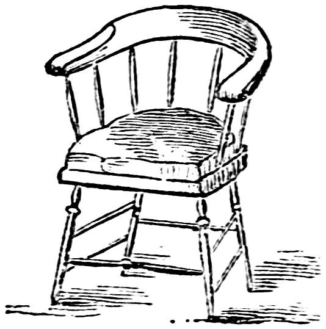
[Pg 34]
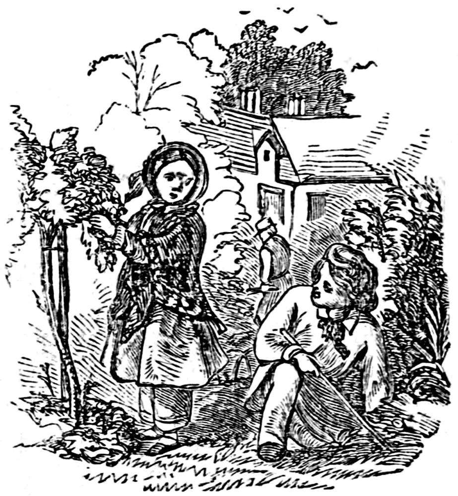
Arthur and Jane had each a little garden of their own, which had been given to them by their kind father. He told them that they must take care to pluck out all the weeds, and to do all they could to make the flowers grow. They used to save some of their money in the winter, and when[Pg 35] the spring came, they spent it in buying seeds and roots.
When the little leaves and stems began to peep above ground, Arthur and Jane watered them every day; and as the plants grew, they took care to keep them free from all insects, and to shade them when the sun shone too strongly. They made a nice path of gravel between the beds, which they kept quite smooth and clean. In the afternoon, as soon as they came home from school, they used to run into the garden to see to their sweet flowers. With all this care the beds looked very pretty when summer came.
But there was one thing which gave them a good deal of trouble. Weeds would spring up. Almost as fast as they were plucked up in one place, they grew in another.
“I do not like those ugly, naughty weeds,” said Jane to her mother. “They must not grow in my pretty garden. I want only sweet flowers to be there.” “Yes,”[Pg 36] added Arthur, “I am sure we have tried our best to keep them out, but they will grow in spite of us.”
“It is just like other little gardens,” said their mother, “in which I wish to see only flowers; but I am sorry to say I have seen many weeds thrive there, though much labor has been given to keep them out.”
“What little gardens are they, mother?”
“Those over which I have watched, and in which I still hope to see some useful and lovely plants, though I have not yet quite gained my wish. I have often thought I could see a few buds, but they have not come into full blossom. And sometimes where I had hoped to find a flower, I have only plucked a weed.”
“But where are these gardens?”
“These gardens are your young hearts, my dears. You know I have wished to see there what I would call my pleasant flowers. One of these is Kindness; and a very large and fine plant it is when fully grown; but[Pg 37] the weed of Selfishness too often springs up around it, until it is quite covered from our view. This ill weed will spread in all directions, and twine itself about every stalk that comes in its way. Humility is a very pretty flower. It does not make much show, for like the sweet violet it hides itself among its own leaves. If you mark it well you will see its delicate and sweet-smelling blossoms. But there are tall and showy weeds called Pride and Vanity, which, though they please some eyes, are very hurtful to the flowers. Truth is another plant in these gardens, but the hurtful weed of Falsehood will come up by its side, and cause it soon to wither and die. Then there are other flowers, known by the names of Industry, Contentment, and Peace, which are much admired by all who see them; but the naughty weeds of Idleness, Sullenness, and Anger often choke the nice plants before they are fully grown.”
“O, I see, mother, what you mean now.[Pg 38] The flowers are good tempers and conduct, and the weeds are our wicked passions and evil ways.”
“You are quite right, Arthur, and you should know that the evil of your hearts is friendly to the growth of these hurtful weeds. Gardeners say that it is always needful to keep young plants clear from all weeds, which twine round the roots, and stop their growth. You see, then, why I have tried to root out all evil which I have seen in your conduct, or to cut it down; but I have felt that the Holy Spirit must renew your hearts. We must watch, and pray, and labor; yet only the Spirit of God can so change these little gardens of your hearts as to make ‘the plants of grace’ grow and flourish in them.”
“You said to us, dear mother, that if we ask God to give us his Holy Spirit, he will hear and answer our prayer.”
“Yes, I did, Jane; and I hope you and your brother will not forget the lesson I[Pg 39] then taught you. Then I shall see in you those flowers which, of all others, are the most lovely that can be found in the human heart. There will be the precious blossom of faith; you will look to Jesus as your Saviour, who died for you on the cross; and you will make him all your trust. The sweet plant of Love will flourish too: you will yield yourselves to God, and love him because he first loved you. And blooming Hope will appear in all its beauty; you will look forward to the happy time when you shall be removed from the Lord’s garden on earth, the church of Christ, to flourish in his heavenly courts forever.”
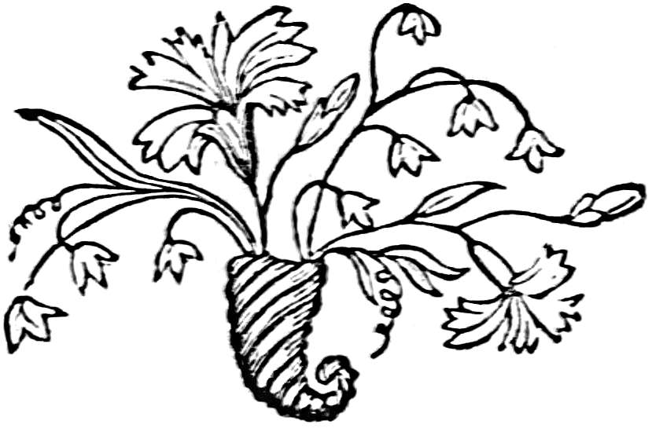
[Pg 40]
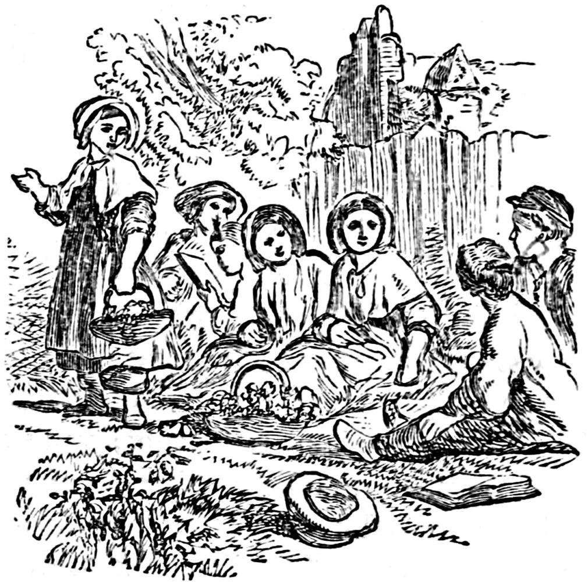
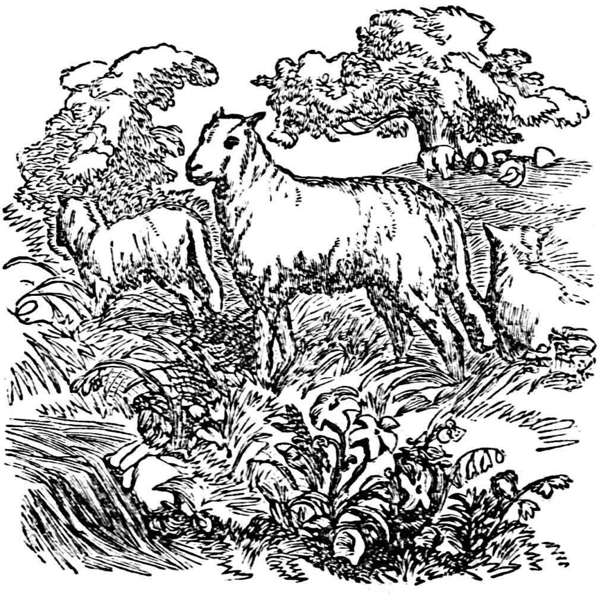
[Pg 42]
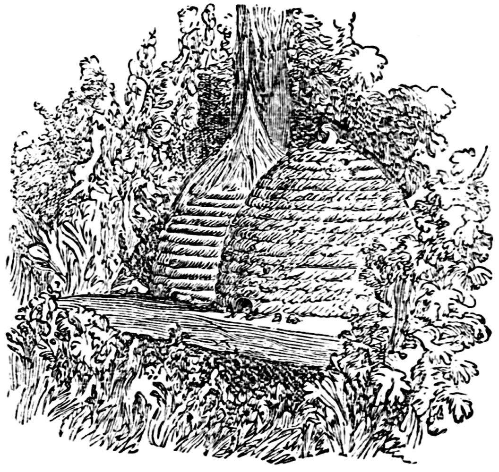
How many living things there are in the world besides boys and girls, and men and women! Some of them have legs, and they creep and run on the ground; some have fins, and they swim in the water; and some have wings, and they fly in the air.
[Pg 43]
If God had not been very wise he would not have known how to make so many live things unlike each other, and if he was not very good he would never have made them so happy. See how the gnat sports in the sun! Hark! how the bird sings in the air!
God has made all things just as they ought to be made. What would the bird do with fins? he could not swim with them. What would the fish do with wings? he could not fly with them,—he would, indeed, be “like a fish out of water.”
If a cow had wings, what a fright she would be to look at in the air! I would run and hide myself; would not you? Why, if she came down, and fell upon us, she would crush us and kill us. There is a picture, in a book that I have, of a horse with wings; but that is all fancy. A horse[Pg 44] is very swift, but swift as he is, he does not fly. No, no! Let people say what they like,
The other day, when the sun was very bright, I saw some gnats at play under a tree. How they did fly up and down! Well, all at once, what should one of them do but settle on my nose! when I spoke to him—
Soon he flew away again, and began to play as before.
I once heard of a gnat that teased a lion half out of his senses. What the lion had done to make him angry I do not know. No doubt you wonder that the lion did not kill him; but he could not. The gnat flew close to his eyes, and sat on his nose, and flew away again every time the lion lifted[Pg 45] up his great paw. If the little gnat was able to plague the great lion, let us act kindly to all, for we see that the weak may vex the strong. The best way is to live in love with every one; and the Bible says much the same thing.
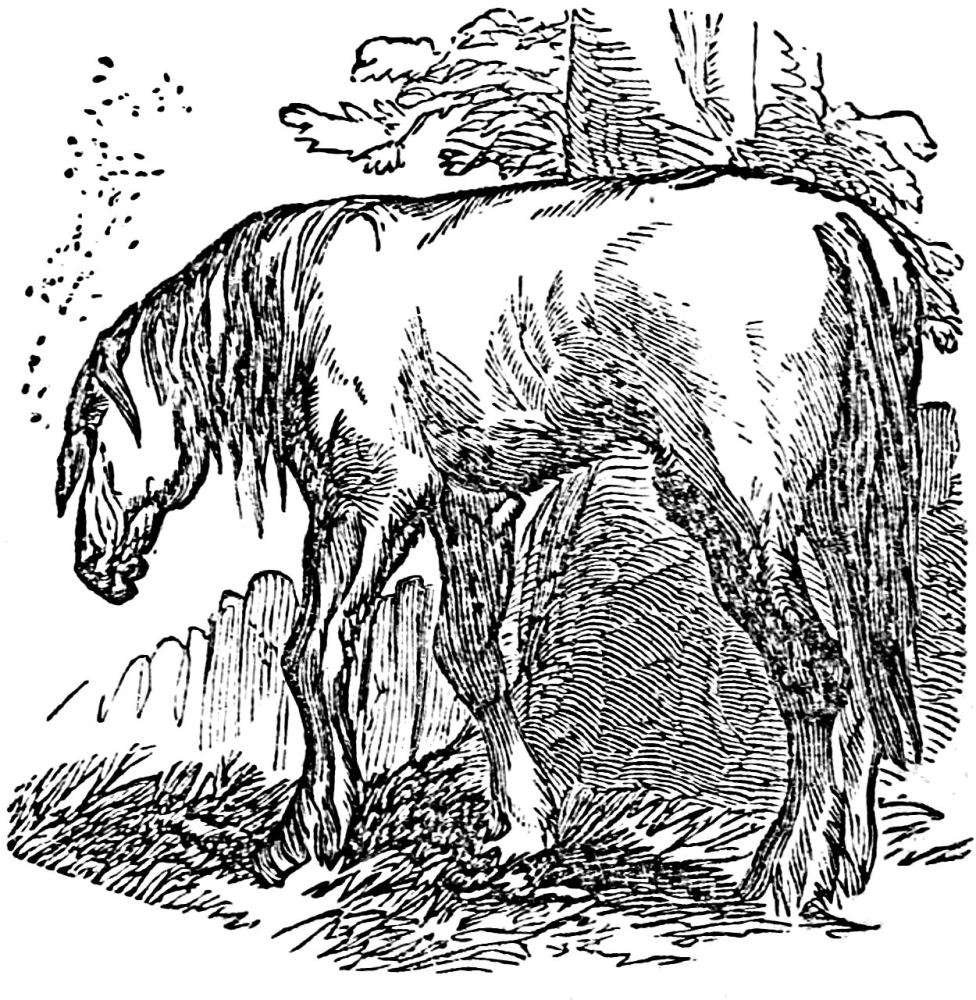
Just as I came away from the tree an old horse went under it. Poor thing! his hip[Pg 46] bones stood up very high. I could almost count the number of his ribs; and one of his legs a little above the hoof was a great deal bigger than it ought to have been.
In less than a minute all the gnats were flying about the old horse. He laid down his ears, and shook his head, and then he lifted up one of his feet and struck his iron hoof on the ground. He did not like the gnats to be about his eyes and ears, any more than I did to have one on my nose. At last the old horse walked away; some of the gnats went with him, and the rest began their game again under the tree.
Hark! do you not hear a loud buzz? It is the large blue fly there that makes it. Now he is on the beam above me, with his head down and his heels up; now he is flying about the room. I cannot follow him with my eyes, he flies so fast. There! what a bang he gave the window pane with his head! Flies are very swift on the[Pg 47] wing; they fly faster than a horse can gallop.
An odd tale has been told, which I will tell you. A bear and a man once acted kindly one to the other. The man fell asleep on the ground, but he had not much rest, for a fly would settle on his face.
“O,” thought the bear, “I will do a kind deed for my friend. I will kill the fly that teases him.” With this, he lifted up his great, heavy paw; but, alas! in killing the fly he tore with his claws the face of the man also.
Let us learn a lesson from this tale. Let us take care that every kind act we do is done in a proper manner, or we may do very little good, or do a great deal of harm.
Then let us not be cruel to any of the creatures God has made, whether they fly in the air, swim in the water, or creep and run on the ground. We ought not to ill use any thing, not even the poor snail that[Pg 48] goes along the ground so slowly, with his house on his back,—
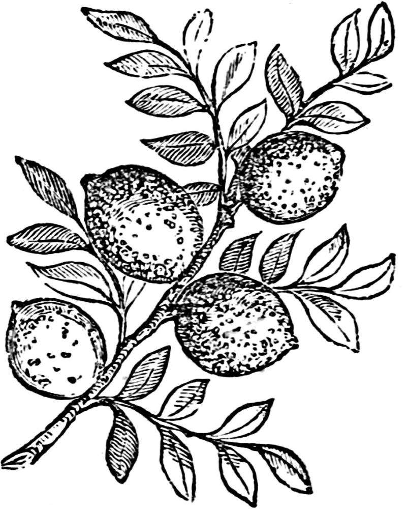
pg 5 Removed extra letter A before: A Teacher’s Gift
pg 35 Added beginning quote to: I do not like